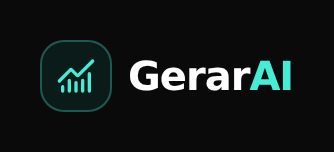

Investment research OS · 2025 – today
Every number,
with its trace.
GerarAI keeps company evidence, valuation, versioned theses and portfolio decisions together. Deterministic valuation engines with a calculation trace, theses audited before they publish, a RAG knowledge library and strict source discipline: official, inferred or no data.
Real GerarAI screens from a local run with invented sample companies. The UI is in Spanish.
Commits
7,800+
Since 28 Sep 2025
Backend tests
16,000+
pytest functions in the repo
Frontend tests
6,500+
Vitest + Testing Library
Release
v0.5.0
Production baseline, 30 Oct 2026
Source discipline
OfficialInferredNo data
Every figure carries where it came from. If there is no source, it says so instead of guessing.
Stack